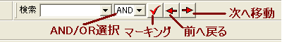
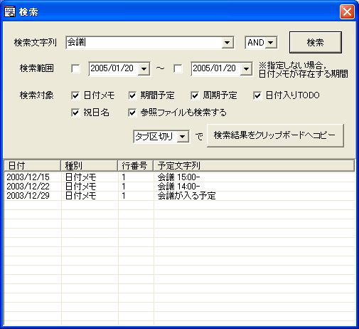
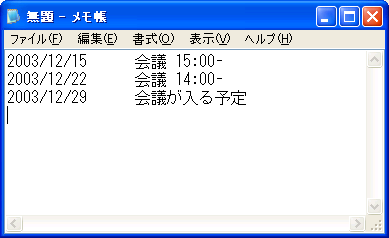

予定の検索には，二つの方法があります． ひとつは，検索ツールバーを用いる方法， もうひとつは，検索ダイアログを用いる方法です．
検索ツールバーは，検索したいキーワードを入力するエリアと， AND/OR 検索オプションの選択リスト， 「マーキング」，「前へ戻る」，「次へ移動」ボタンから構成されています．
検索ツールバーのコンボボックスに値を入力して Enter キーあるいは 右側のマーキングボタンを押すと， その文字列が日付メモ中に含まれている日の 背景色が変わります． 検索時の大文字と小文字の区別の設定や， この背景色を変更したい場合はこちら．
[次へ移動] ボタンを押下すると，カーソルが現在ある位置から， 次にそのキーワードを含む日に移動し，そのアイテムを編集状態にします． また，[前へ戻る]ボタンを押下すると，カーソルが現在ある位置から過去へさかのぼって そのキーワードを含む日に移動し，そのアイテムを編集状態にします．
キーワードを複数指定する場合は，半角スペースで区切ります． 複数のキーワードをすべて含むものを検索したい場合は "AND" を， いずれか一つでも含むものを検索したい場合は "OR" を，選んでください． キーワードが入力された状態でこの選択を切り替えると， 自動で再検索が行われます．
ツールバーからの検索では日付メモ以外 （期間予定・周期予定）を検索対象とすることはできません． これらの検索を行うには，検索ダイアログを用います．
メニュー [カレンダー]-[予定の検索] を選ぶことで， 検索ダイアログが開きます．
検索ダイアログでは，上端の [検索文字列] ボックスに 値を入力して Enter キーあるいは 右側のボタンを押すと，検索結果が一覧表示されます．
検索したい文字列が複数ある場合，空白で区切って入力してください． 検索文字列の入力欄の右側にあるコンボボックスで， 文字列のすべてが出現する日を検索するか（"AND"）， いずれか１つでも出現する日を検索するか（"OR"）を選択します．
検索する期間は，標準（何も指定しない状態）では， 日付メモが存在する期間だけが検索の対象となります． 範囲外に出る期間予定や周期予定を検索したい場合には， 検索範囲を明示的に指定してください．
検索対象としては，日付メモ，期間予定，周期予定， 日付入りTODO，祝日名，参照ファイルが選択可能です．
注意: 日付の名前として設定された周期予定に対する検索は， [周期予定] チェックボックスを有効にすることで検索が可能です． [祝日名] は，法定の祝日（祝日定義ファイルで与えられた祝日）だけが 対象となります．
検索結果の各行をクリックすると，その日にカーソルが移動します． また，検索結果の各行をダブルクリックすると，データの編集モードになります． 検索ダイアログでの入力は検索ツールバーと連動しており， 日付メモへのマーキングも自動で実行されますが， 日付への着色が行われるのは日付メモの内容のみであることに注意してください．
検索結果は， [検索結果をクリップボードへコピー]ボタンを押下することで， 日付と予定のリストを，指定の形式でコピーすることが可能です． このとき，日付と予定文字列だけがコピーされます． また，同様の機能は，検索結果のリスト上で右クリックすると 表示される [タブ区切りでリストをコピー], [CSV形式でリストをコピー] という ポップアップメニューからも実行することができます．
